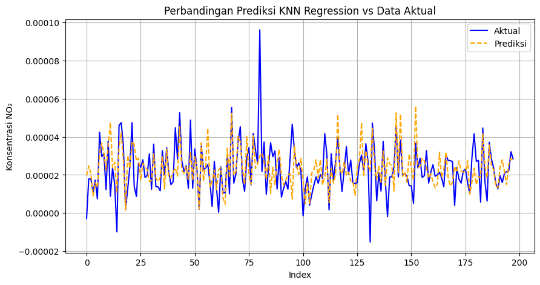
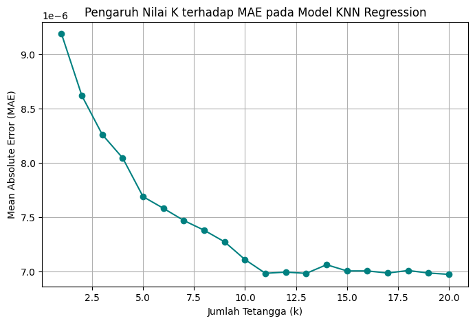
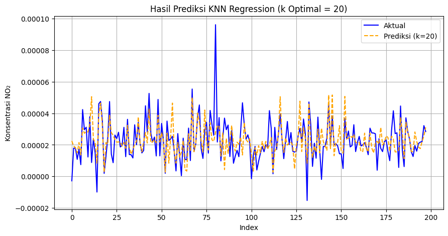

KNN Regression untuk Prediksi Konsentrasi NO₂ (Revisi)#
Pada bagian ini dilakukan pemodelan K-Nearest Neighbors Regression untuk memprediksi nilai konsentrasi gas NO₂ berdasarkan data hasil lag 30.
Dataset yang digunakan: data/NO2_Kwanyar_Preprocessed_Lag30.csv
Langkah-langkah yang dilakukan:
Load dataset hasil lag 30
Eksplorasi data (tipe data, deskripsi statistik, missing values)
Normalisasi fitur numerik
Pembagian data train-test
Pelatihan model KNN Regression
Evaluasi model menggunakan MAE, RMSE, R², dan MAPE
Visualisasi hasil prediksi vs data aktual
# Import library utama
import pandas as pd
import numpy as np
import matplotlib.pyplot as plt
from sklearn.model_selection import train_test_split
from sklearn.preprocessing import MinMaxScaler
from sklearn.neighbors import KNeighborsRegressor
from sklearn.metrics import mean_absolute_error, mean_squared_error, r2_score
Load Dataset#
# Load dataset hasil preprocessing dan lag 30
data_path = "data/NO2_Kwanyar_Lag30.csv"
df = pd.read_csv(data_path)
print("✅ Dataset berhasil dimuat.\n")
print(df.info())
df.head()
✅ Dataset berhasil dimuat.
<class 'pandas.core.frame.DataFrame'>
RangeIndex: 986 entries, 0 to 985
Data columns (total 32 columns):
# Column Non-Null Count Dtype
--- ------ -------------- -----
0 Tanggal 986 non-null object
1 NO2 986 non-null float64
2 NO2_lag_1 986 non-null float64
3 NO2_lag_2 986 non-null float64
4 NO2_lag_3 986 non-null float64
5 NO2_lag_4 986 non-null float64
6 NO2_lag_5 986 non-null float64
7 NO2_lag_6 986 non-null float64
8 NO2_lag_7 986 non-null float64
9 NO2_lag_8 986 non-null float64
10 NO2_lag_9 986 non-null float64
11 NO2_lag_10 986 non-null float64
12 NO2_lag_11 986 non-null float64
13 NO2_lag_12 986 non-null float64
14 NO2_lag_13 986 non-null float64
15 NO2_lag_14 986 non-null float64
16 NO2_lag_15 986 non-null float64
17 NO2_lag_16 986 non-null float64
18 NO2_lag_17 986 non-null float64
19 NO2_lag_18 986 non-null float64
20 NO2_lag_19 986 non-null float64
21 NO2_lag_20 986 non-null float64
22 NO2_lag_21 986 non-null float64
23 NO2_lag_22 986 non-null float64
24 NO2_lag_23 986 non-null float64
25 NO2_lag_24 986 non-null float64
26 NO2_lag_25 986 non-null float64
27 NO2_lag_26 986 non-null float64
28 NO2_lag_27 986 non-null float64
29 NO2_lag_28 986 non-null float64
30 NO2_lag_29 986 non-null float64
31 NO2_lag_30 986 non-null float64
dtypes: float64(31), object(1)
memory usage: 246.6+ KB
None
| Tanggal | NO2 | NO2_lag_1 | NO2_lag_2 | NO2_lag_3 | NO2_lag_4 | NO2_lag_5 | NO2_lag_6 | NO2_lag_7 | NO2_lag_8 | ... | NO2_lag_21 | NO2_lag_22 | NO2_lag_23 | NO2_lag_24 | NO2_lag_25 | NO2_lag_26 | NO2_lag_27 | NO2_lag_28 | NO2_lag_29 | NO2_lag_30 | |
|---|---|---|---|---|---|---|---|---|---|---|---|---|---|---|---|---|---|---|---|---|---|
| 0 | 2023-01-31 | 0.000032 | 0.000031 | 0.000030 | 0.000030 | 0.000029 | 0.000028 | 0.000028 | 0.000027 | 0.000027 | ... | 0.000049 | 0.000049 | 0.000049 | 0.000043 | 0.000037 | 0.000031 | 0.000034 | 0.000034 | 0.000034 | 0.000034 |
| 1 | 2023-02-01 | 0.000032 | 0.000032 | 0.000031 | 0.000030 | 0.000030 | 0.000029 | 0.000028 | 0.000028 | 0.000027 | ... | 0.000053 | 0.000049 | 0.000049 | 0.000049 | 0.000043 | 0.000037 | 0.000031 | 0.000034 | 0.000034 | 0.000034 |
| 2 | 2023-02-02 | 0.000033 | 0.000032 | 0.000032 | 0.000031 | 0.000030 | 0.000030 | 0.000029 | 0.000028 | 0.000028 | ... | 0.000007 | 0.000053 | 0.000049 | 0.000049 | 0.000049 | 0.000043 | 0.000037 | 0.000031 | 0.000034 | 0.000034 |
| 3 | 2023-02-03 | 0.000034 | 0.000033 | 0.000032 | 0.000032 | 0.000031 | 0.000030 | 0.000030 | 0.000029 | 0.000028 | ... | 0.000026 | 0.000007 | 0.000053 | 0.000049 | 0.000049 | 0.000049 | 0.000043 | 0.000037 | 0.000031 | 0.000034 |
| 4 | 2023-02-04 | 0.000034 | 0.000034 | 0.000033 | 0.000032 | 0.000032 | 0.000031 | 0.000030 | 0.000030 | 0.000029 | ... | 0.000034 | 0.000026 | 0.000007 | 0.000053 | 0.000049 | 0.000049 | 0.000049 | 0.000043 | 0.000037 | 0.000031 |
5 rows × 32 columns
Eksplorasi Data#
Langkah ini bertujuan untuk memahami struktur dataset:
Melihat tipe data
Statistik deskriptif
Cek apakah ada nilai kosong
# Statistik deskriptif
display(df.describe())
# Cek missing values
print("Jumlah nilai kosong per kolom:")
print(df.isnull().sum())
| NO2 | NO2_lag_1 | NO2_lag_2 | NO2_lag_3 | NO2_lag_4 | NO2_lag_5 | NO2_lag_6 | NO2_lag_7 | NO2_lag_8 | NO2_lag_9 | ... | NO2_lag_21 | NO2_lag_22 | NO2_lag_23 | NO2_lag_24 | NO2_lag_25 | NO2_lag_26 | NO2_lag_27 | NO2_lag_28 | NO2_lag_29 | NO2_lag_30 | |
|---|---|---|---|---|---|---|---|---|---|---|---|---|---|---|---|---|---|---|---|---|---|
| count | 986.000000 | 986.000000 | 986.000000 | 986.000000 | 986.000000 | 986.000000 | 986.000000 | 986.000000 | 986.000000 | 986.000000 | ... | 986.000000 | 986.000000 | 986.000000 | 986.000000 | 986.000000 | 986.000000 | 986.000000 | 986.000000 | 986.000000 | 986.000000 |
| mean | 0.000023 | 0.000023 | 0.000023 | 0.000023 | 0.000023 | 0.000023 | 0.000023 | 0.000023 | 0.000023 | 0.000023 | ... | 0.000023 | 0.000023 | 0.000023 | 0.000023 | 0.000023 | 0.000023 | 0.000023 | 0.000023 | 0.000023 | 0.000023 |
| std | 0.000013 | 0.000013 | 0.000013 | 0.000013 | 0.000013 | 0.000013 | 0.000013 | 0.000013 | 0.000013 | 0.000013 | ... | 0.000013 | 0.000013 | 0.000013 | 0.000013 | 0.000013 | 0.000013 | 0.000013 | 0.000013 | 0.000013 | 0.000013 |
| min | -0.000076 | -0.000076 | -0.000076 | -0.000076 | -0.000076 | -0.000076 | -0.000076 | -0.000076 | -0.000076 | -0.000076 | ... | -0.000076 | -0.000076 | -0.000076 | -0.000076 | -0.000076 | -0.000076 | -0.000076 | -0.000076 | -0.000076 | -0.000076 |
| 25% | 0.000014 | 0.000014 | 0.000014 | 0.000014 | 0.000014 | 0.000014 | 0.000014 | 0.000014 | 0.000014 | 0.000014 | ... | 0.000014 | 0.000014 | 0.000014 | 0.000014 | 0.000014 | 0.000014 | 0.000014 | 0.000014 | 0.000014 | 0.000014 |
| 50% | 0.000022 | 0.000022 | 0.000022 | 0.000022 | 0.000022 | 0.000022 | 0.000022 | 0.000022 | 0.000022 | 0.000022 | ... | 0.000022 | 0.000022 | 0.000022 | 0.000022 | 0.000022 | 0.000022 | 0.000022 | 0.000022 | 0.000022 | 0.000022 |
| 75% | 0.000030 | 0.000030 | 0.000030 | 0.000030 | 0.000030 | 0.000030 | 0.000030 | 0.000030 | 0.000030 | 0.000030 | ... | 0.000030 | 0.000030 | 0.000030 | 0.000030 | 0.000030 | 0.000030 | 0.000030 | 0.000030 | 0.000031 | 0.000031 |
| max | 0.000096 | 0.000096 | 0.000096 | 0.000096 | 0.000096 | 0.000096 | 0.000096 | 0.000096 | 0.000096 | 0.000096 | ... | 0.000096 | 0.000096 | 0.000096 | 0.000096 | 0.000096 | 0.000096 | 0.000096 | 0.000096 | 0.000096 | 0.000096 |
8 rows × 31 columns
Jumlah nilai kosong per kolom:
Tanggal 0
NO2 0
NO2_lag_1 0
NO2_lag_2 0
NO2_lag_3 0
NO2_lag_4 0
NO2_lag_5 0
NO2_lag_6 0
NO2_lag_7 0
NO2_lag_8 0
NO2_lag_9 0
NO2_lag_10 0
NO2_lag_11 0
NO2_lag_12 0
NO2_lag_13 0
NO2_lag_14 0
NO2_lag_15 0
NO2_lag_16 0
NO2_lag_17 0
NO2_lag_18 0
NO2_lag_19 0
NO2_lag_20 0
NO2_lag_21 0
NO2_lag_22 0
NO2_lag_23 0
NO2_lag_24 0
NO2_lag_25 0
NO2_lag_26 0
NO2_lag_27 0
NO2_lag_28 0
NO2_lag_29 0
NO2_lag_30 0
dtype: int64
Persiapan Data untuk Model#
Pada tahap ini:
Kolom
Tanggaldihapus karena bukan fitur numerik.Kolom target adalah
NO2.Data dibagi menjadi fitur (
X) dan target (y).dan saya mengambil fitur dari lag >0,5
x = df[["NO2_lag_1"]] # hanya gunakan lag 1 karena hanya itu yang > 0.5
y = df["NO2"]
print("Jumlah fitur:", x.shape[1])
print("Jumlah data:", x.shape[0])
Jumlah fitur: 1
Jumlah data: 986
Normalisasi Data#
Normalisasi digunakan agar seluruh fitur memiliki skala yang seragam. Metode: Min-Max Scaling (0–1).
# Normalisasi fitur numerik
scaler = MinMaxScaler()
x_scaled = scaler.fit_transform(x)
# Konversi kembali ke DataFrame agar mudah dibaca
x_scaled = pd.DataFrame(x_scaled, columns=x.columns)
x_scaled.head()
| NO2_lag_1 | |
|---|---|
| 0 | 0.622174 |
| 1 | 0.625918 |
| 2 | 0.629662 |
| 3 | 0.633407 |
| 4 | 0.637151 |
Pembagian Data Train dan Test#
Data dibagi menjadi:
80% untuk data latih (training)
20% untuk data uji (testing)
X_train, X_test, y_train, y_test = train_test_split(
X_scaled, y, test_size=0.2, random_state=42, shuffle=True
)
print(f"Data latih: {X_train.shape[0]} sampel")
print(f"Data uji : {X_test.shape[0]} sampel")
---------------------------------------------------------------------------
NameError Traceback (most recent call last)
Cell In[6], line 2
1 X_train, X_test, y_train, y_test = train_test_split(
----> 2 X_scaled, y, test_size=0.2, random_state=42, shuffle=True
3 )
5 print(f"Data latih: {X_train.shape[0]} sampel")
6 print(f"Data uji : {X_test.shape[0]} sampel")
NameError: name 'X_scaled' is not defined
Pelatihan Model KNN Regression#
Model K-Nearest Neighbors akan mencari tetangga terdekat berdasarkan jarak Euclidean.
Pada tahap awal digunakan k=5 (dapat disesuaikan untuk uji parameter).
# Inisialisasi dan latih model
knn = KNeighborsRegressor(n_neighbors=5)
knn.fit(X_train, y_train)
# Prediksi
y_pred = knn.predict(X_test)
Evaluasi Model#
Evaluasi dilakukan menggunakan beberapa metrik:
MAE (Mean Absolute Error)
RMSE (Root Mean Squared Error)
R² (Koefisien Determinasi)
MAPE (Mean Absolute Percentage Error) sesuai arahan dosen.
# Evaluasi
mae = mean_absolute_error(y_test, y_pred)
rmse = np.sqrt(mean_squared_error(y_test, y_pred))
r2 = r2_score(y_test, y_pred)
mape = np.mean(np.abs((y_test - y_pred) / y_test)) * 100
print(f"📈 MAE : {mae:.4f}")
print(f"📉 RMSE : {rmse:.4f}")
print(f"🔹 R² : {r2:.4f}")
print(f"📊 MAPE : {mape:.2f}%")
📈 MAE : 0.0000
📉 RMSE : 0.0000
🔹 R² : 0.2481
📊 MAPE : 87.57%
Visualisasi Hasil Prediksi vs Data Aktual#
Visualisasi digunakan untuk melihat sejauh mana hasil prediksi mendekati data aktual.
plt.figure(figsize=(10,5))
plt.plot(y_test.values, label="Aktual", color="blue")
plt.plot(y_pred, label="Prediksi", color="orange", linestyle="--")
plt.title("Perbandingan Prediksi KNN Regression vs Data Aktual")
plt.xlabel("Index")
plt.ylabel("Konsentrasi NO₂")
plt.legend()
plt.grid(True)
plt.show()

Kesimpulan#
Model KNN Regression berhasil digunakan untuk memprediksi konsentrasi NO₂ berdasarkan hasil lag 30.
Dari hasil evaluasi diperoleh nilai MAE, RMSE, R², dan MAPE yang mencerminkan tingkat akurasi model.
Selanjutnya model dapat dioptimalkan dengan:
Penentuan jumlah neighbors (k) terbaik menggunakan GridSearchCV
Menambahkan fitur lain seperti suhu, kelembapan, atau arah angin jika tersedia
Menentukan Nilai K Optimal#
Untuk meningkatkan performa model, dilakukan pencarian jumlah tetangga terbaik (k).
Nilai k diuji dari 1 hingga 20, dan akan dihitung nilai MAE untuk setiap k.
Nilai k dengan MAE terkecil dianggap sebagai parameter optimal.
# Rentang nilai k yang akan diuji
k_values = range(1, 21)
mae_scores = []
for k in k_values:
knn_temp = KNeighborsRegressor(n_neighbors=k)
knn_temp.fit(X_train, y_train)
y_pred_temp = knn_temp.predict(X_test)
mae = mean_absolute_error(y_test, y_pred_temp)
mae_scores.append(mae)
# Temukan nilai k dengan MAE terkecil
best_k = k_values[np.argmin(mae_scores)]
best_mae = np.min(mae_scores)
print(f"✅ Nilai k optimal: {best_k}")
print(f"📉 MAE terkecil : {best_mae:.4f}")
✅ Nilai k optimal: 20
📉 MAE terkecil : 0.0000
Visualisasi Nilai K vs MAE#
Visualisasi ini memperlihatkan hubungan antara jumlah tetangga (k) dan error model.
Tujuannya agar kita tahu pada titik mana model menghasilkan error terendah.
plt.figure(figsize=(8,5))
plt.plot(k_values, mae_scores, marker='o', linestyle='-', color='teal')
plt.title("Pengaruh Nilai K terhadap MAE pada Model KNN Regression")
plt.xlabel("Jumlah Tetangga (k)")
plt.ylabel("Mean Absolute Error (MAE)")
plt.grid(True)
plt.show()

Pelatihan Ulang Model dengan K Optimal#
Setelah menemukan nilai k terbaik, model akan dilatih ulang menggunakan parameter tersebut.
# Latih ulang model dengan k optimal
knn_best = KNeighborsRegressor(n_neighbors=best_k)
knn_best.fit(X_train, y_train)
# Prediksi ulang
y_pred_best = knn_best.predict(X_test)
# Evaluasi ulang
mae_best = mean_absolute_error(y_test, y_pred_best)
rmse_best = np.sqrt(mean_squared_error(y_test, y_pred_best))
r2_best = r2_score(y_test, y_pred_best)
mape_best = np.mean(np.abs((y_test - y_pred_best) / y_test)) * 100
print(f"🔹 K Optimal : {best_k}")
print(f"📈 MAE : {mae_best:.4f}")
print(f"📉 RMSE : {rmse_best:.4f}")
print(f"🔹 R² : {r2_best:.4f}")
print(f"📊 MAPE : {mape_best:.2f}%")
🔹 K Optimal : 20
📈 MAE : 0.0000
📉 RMSE : 0.0000
🔹 R² : 0.3340
📊 MAPE : 73.06%
Visualisasi Hasil Akhir (Dengan K Optimal)#
plt.figure(figsize=(10,5))
plt.plot(y_test.values, label="Aktual", color="blue")
plt.plot(y_pred_best, label=f"Prediksi (k={best_k})", color="orange", linestyle="--")
plt.title(f"Hasil Prediksi KNN Regression (k Optimal = {best_k})")
plt.xlabel("Index")
plt.ylabel("Konsentrasi NO₂")
plt.legend()
plt.grid(True)
plt.show()

Kesimpulan Akhir#
Nilai k optimal diperoleh dari uji error terendah (MAE terkecil).
Model KNN dengan
k = {{best_k}}memberikan hasil prediksi yang lebih stabil dibanding nilai awalk=5.Proses tuning ini membantu menghindari underfitting (jika k terlalu kecil) dan overfitting (jika k terlalu besar).
Selanjutnya, model dapat dikembangkan lebih lanjut dengan:
Cross-validation
Penambahan fitur cuaca eksternal
Optimasi skala data atau bobot jarak (misalnya
weights='distance')